Ek nazar mein
- 1Asli sawaal — users content padhenge ya app operate karenge?
- 2Framework — Astro, Next.js, Vite + React, Angular, WordPress, plain HTML: kab kaunsa
- 3UI layers — shadcn/ui, Aceternity UI, Motion, GSAP (1 element = 1 library)
- 4Scroll video — FFmpeg frames → canvas → ScrollTrigger; Remotion; mobile fallback
- ★AI prompt — "sabse halka stack batao jo meri requirements poori kare"
Poora guide (11 pages)
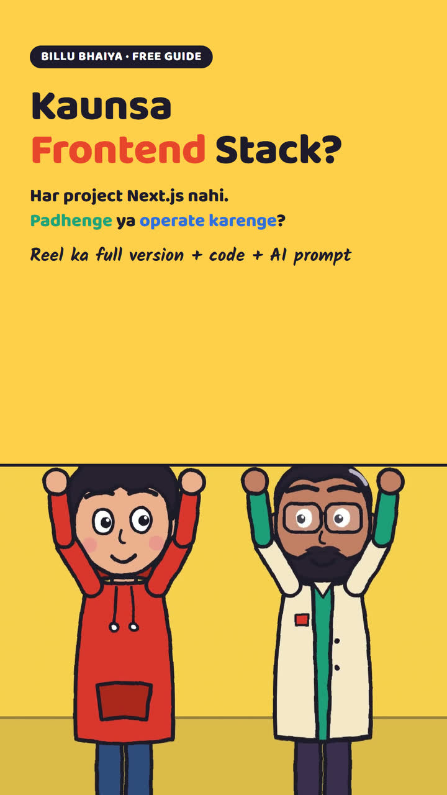
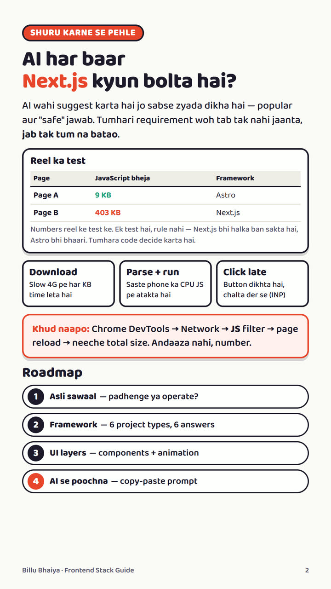
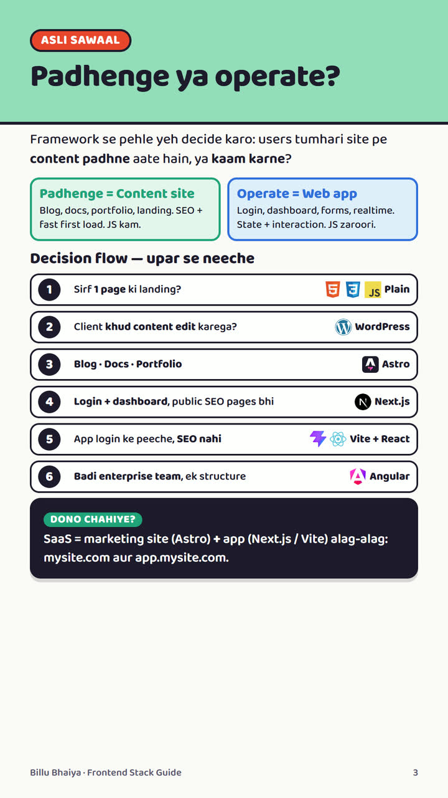
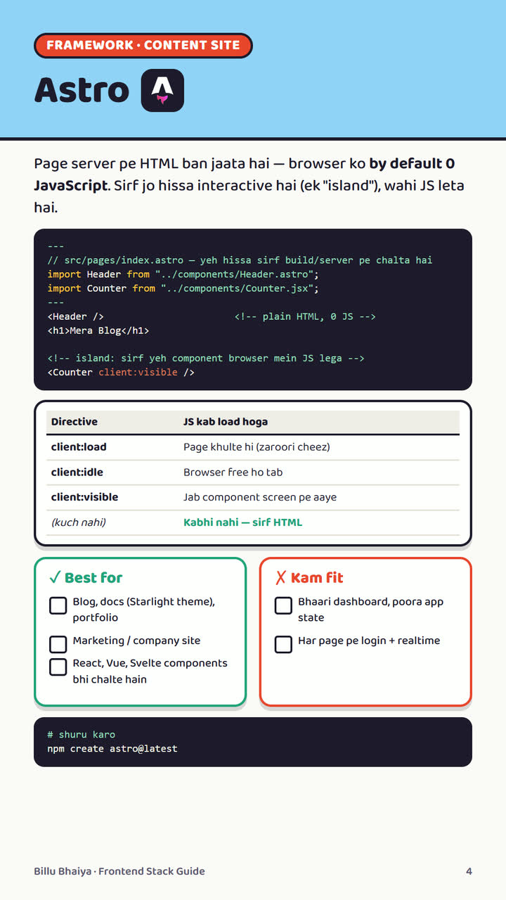
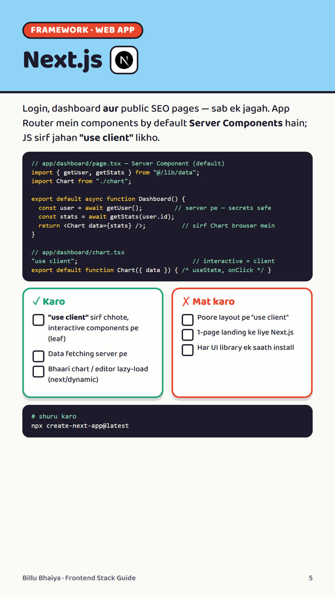
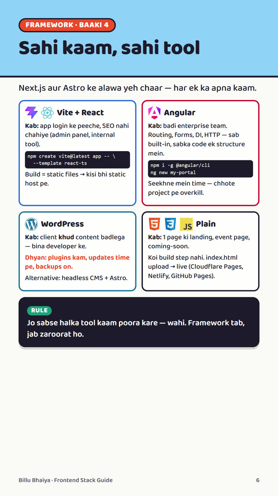
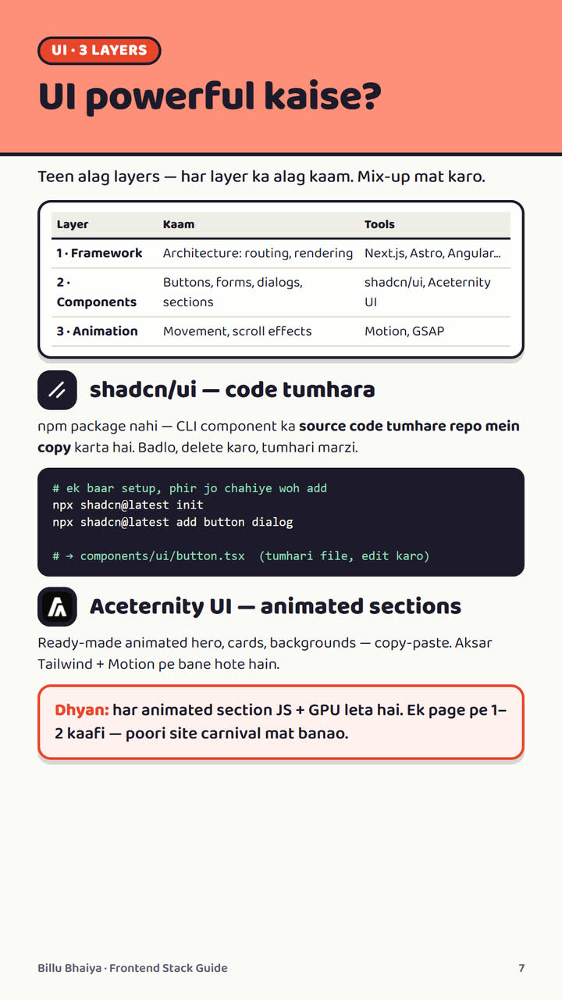
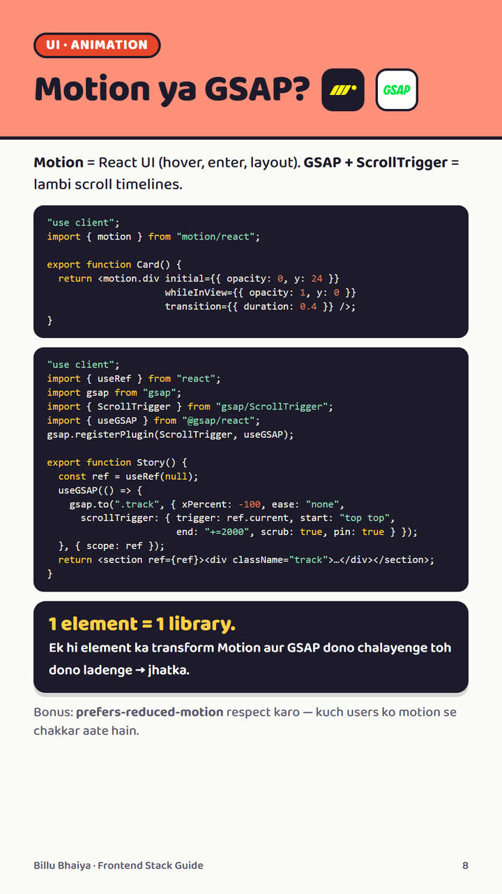
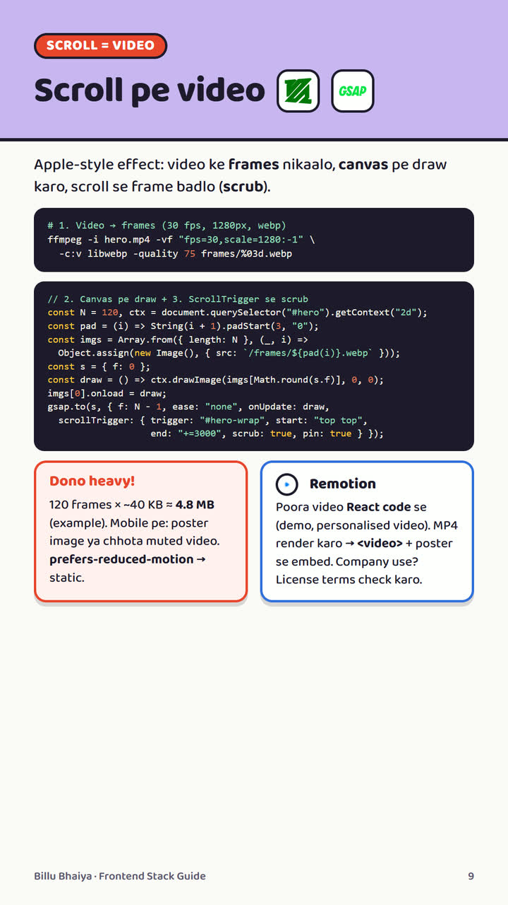
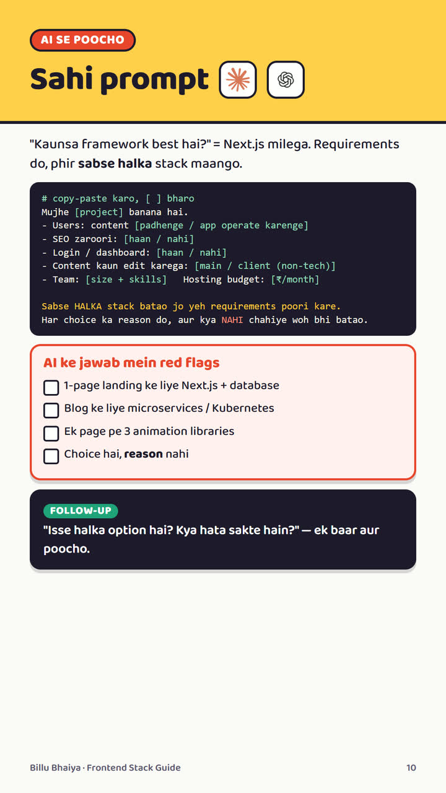
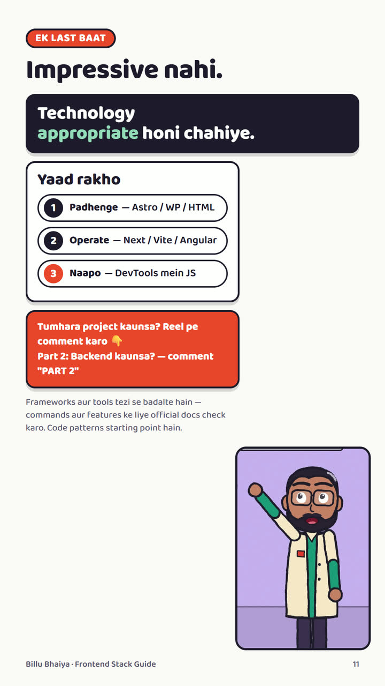